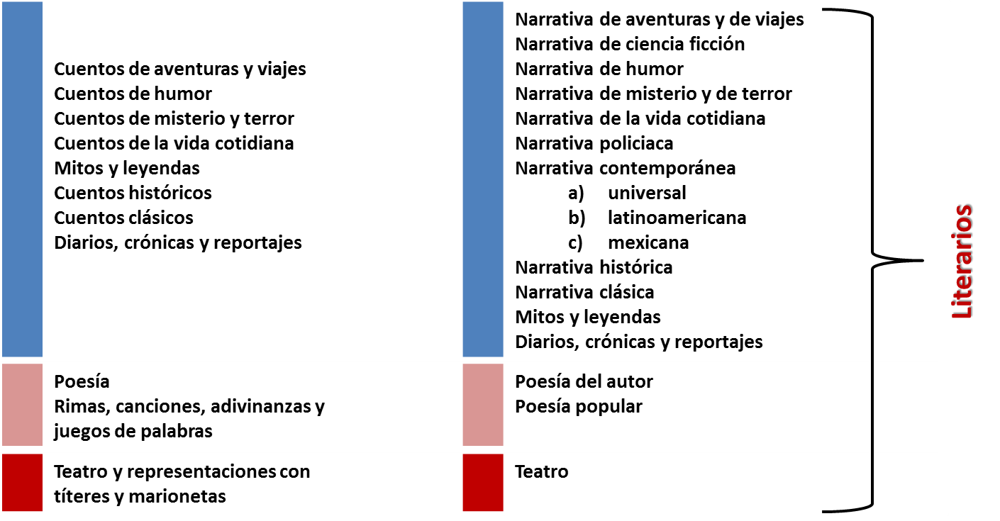

Sobre la colección
La colección Libros del Rincón, desde su inicio a mediados de los años ochenta, ha contribuido de manera significativa a la formación de lectores en la escuela.
Los Libros del Rincón amplían y profundizan sus propósitos y alcances; todos los alumnos de las escuelas públicas de educación básica reciben libros de este acervo según las competencias lectoras que se espera desarrollen durante la educación obligatoria.
Objetivos de la Colección
Contribuir a la formación de lectores y escritores mediante la disponibilidad de opciones de lecturas individuales y colectivas, no sólo complementarias sino distintas de las que se encuentran en los libros de texto.
Instalar las condiciones materiales necesarias a fin de favorecer el desarrollo de un modelo pedagógico que requiere la presencia de una diversidad de títulos, géneros, formatos, temas y autores que posibiliten múltiples lecturas dentro y fuera del aula y de la escuela.
Ofrecer la posibilidad de atender las múltiples necesidades de los alumnos de educación básica en los distintos momentos de su desarrollo como lectores y escritores.
La colección Libros del Rincón está conformada por acervos para la Biblioteca Escolar y la Biblioteca de Aula.
La Biblioteca Escolar, ofrece la posibilidad de incrementar las fuentes de información, fomentar el desarrollo de habilidades de investigación y permitir a los lectores un contacto más amplio con temáticas, géneros y autores, apoyar el modelo pedagógico propuesto por las reformas curriculares en curso. En ella se desarrolla un proyecto capaz de impulsar y coordinar la circulación de una diversidad de textos en el centro escolar en su conjunto, atendiendo necesidades lectoras de toda la comunidad, favoreciendo la articulación de la actividad escolar.
El acervo para el aula, acorta la distancia entre el libro y sus posibles usuarios permitiendo que los alumnos compartan momentos de consulta, investigación y lectura con muy diversos propósitos; ello favorece la interacción y el intercambio de ideas. Al mismo tiempo, gracias a que los materiales de lectura están a la mano para un uso habitual y significativo, tanto dentro del aula como fuera de ella, alumnos y profesores comparten la experiencia de manejar, conservar y organizar el funcionamiento de un acervo.
Para facilitar su clasificación, los acervos para la Biblioteca Escolar y de Aula se organizan en series, géneros y categorías.
Las series Al sol solito, Pasos de luna, Astrolabio, Espejo de urania y Cometas convidados, describen los perfiles lectores y son utilizadas de forma transversal en los diferentes grados escolares e incluso en diferentes niveles educativos. Los perfiles lectores descritos no se conciben de manera rígida e inamovible, al contrario, se superponen y se complementan.
La colección se divide en dos géneros: informativo y literario. Para cada uno de ellos se definieron categorías que describen las características de los textos y facilitan la organización de los acervos en las aulas y en las escuelas. Las categorías están relacionadas con un color que facilita su identificación y clasificación.

Los acervos para la Biblioteca Escolar y de Aula representan un proyecto de formación de lectores y escritores que ofrece opciones de lecturas individuales y colectivas, no sólo complementarias sino distintas de las que se encuentran en los libros de texto. Estos se complementan.
El acervo para la Biblioteca Escolar, por su tamaño, ofrece a los lectores oportunidades de ampliar su universo al entrar en contacto con materiales escritos de los mismos géneros y categorías que se encuentran en las aulas. Los libros enciclopédicos, y en general, las obras de referencia se localizarán solamente en el acervo escolar para su consulta.
El acervo para la Biblioteca de Aula representa una oportunidad de lectura en profundidad. Cada uno de los libros para los salones ofrece posibilidades de lectura diferentes, pone a disposición temas y formatos que son muestra del acervo (mucho más amplio) que podrá encontrarse no sólo en la biblioteca de la escuela, sino en los distintos acervos presentes en la vida social. Con ellos, se tienden lazos de búsqueda, se alimenta la curiosidad y se intenta que con su presencia constante los libros se vayan volviendo elementos de referencia y uso permanente, tan habituales como el resto de los objetos en el salón de clases.
Los acervos que integran las Bibliotecas Escolares y de Aula ofrecen la posibilidad de atender las múltiples necesidades de los alumnos de educación básica en los distintos momentos de su desarrollo como lectores; de esta manera, toman en cuenta a los niños que aún no inician el aprendizaje formal de la lectura y escritura, a los que ya lo han iniciado, y a quienes leen y escriben de manera habitual.
La colección Libros del Rincón contiene libros monolingües, bilingües y estatales.
Los acervos para la Biblioteca Escolar y de Aula representan un proyecto de formación de lectores y escritores que ofrece opciones de lecturas individuales y colectivas, no sólo complementarias sino distintas de las que se encuentran en los libros de texto. Estos se complementan.
El acervo para la Biblioteca Escolar, por su tamaño, ofrece a los lectores oportunidades de ampliar su universo al entrar en contacto con materiales escritos de los mismos géneros y categorías que se encuentran en las aulas. Los libros enciclopédicos, y en general, las obras de referencia se localizarán solamente en el acervo escolar para su consulta.
El acervo para la Biblioteca de Aula representa una oportunidad de lectura en profundidad. Cada uno de los libros para los salones ofrece posibilidades de lectura diferentes, pone a disposición temas y formatos que son muestra del acervo (mucho más amplio) que podrá encontrarse no sólo en la biblioteca de la escuela, sino en los distintos acervos presentes en la vida social. Con ellos, se tienden lazos de búsqueda, se alimenta la curiosidad y se intenta que con su presencia constante los libros se vayan volviendo elementos de referencia y uso permanente, tan habituales como el resto de los objetos en el salón de clases.
Los acervos que integran las Bibliotecas Escolares y de Aula ofrecen la posibilidad de atender las múltiples necesidades de los alumnos de educación básica en los distintos momentos de su desarrollo como lectores; de esta manera, toman en cuenta a los niños que aún no inician el aprendizaje formal de la lectura y escritura, a los que ya lo han iniciado, y a quienes leen y escriben de manera habitual.
La colección Libros del Rincón contiene libros monolingües, bilingües y estatales.